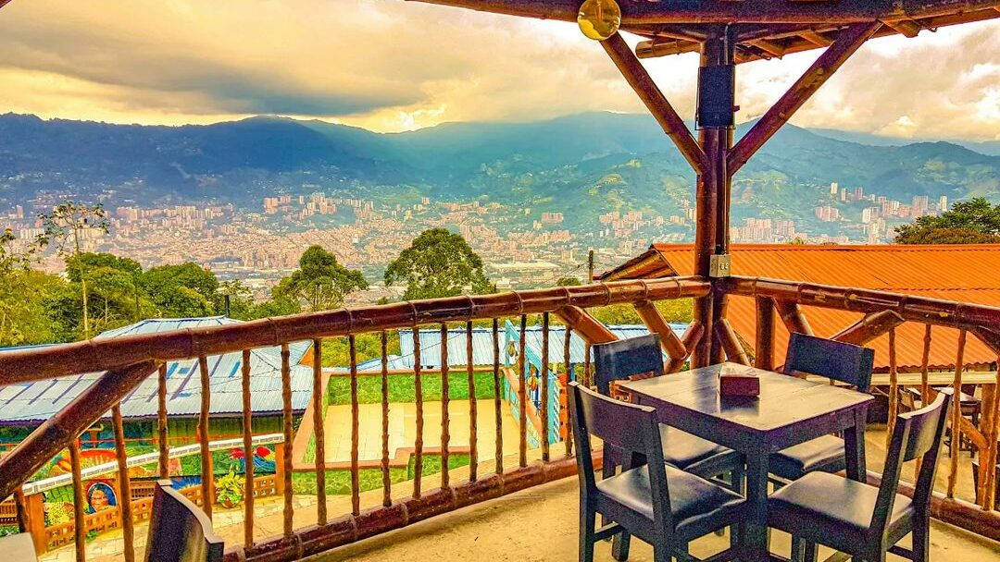
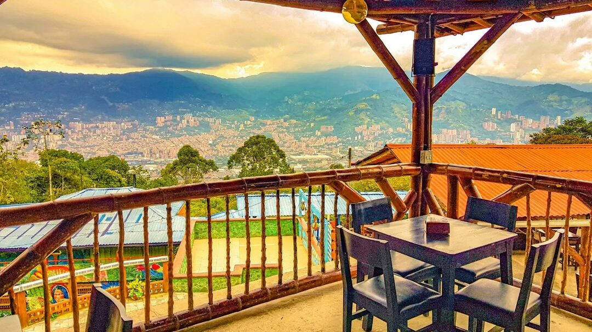

Sobre este lugar
La Montaña que Piensa es uno de los destinos turísticos más especiales de Itagüí, reconocido por su vista panorámica del Valle de Aburrá y su ambiente natural.
Allí también se realizan presentaciones artísticas, música en vivo e interpretaciones, lo que convierte el lugar en un espacio cultural y turístico.
Además funciona como restaurante, ideal para disfrutar comida típica y compartir mientras se aprecia un paisaje único.
Comentarios